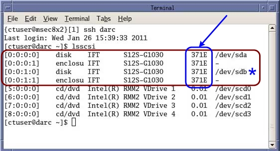

Illustration 1: HSDA's RAID Controller Firmware Revision Example

| NOTE: | If the firmware revision displayed is version “363B”, Hard Drive FRU 5308760-3 can not be used. The Firmware must be upgraded to version “371E” before using Hard Drive FRU 5308760-3. This firmware version 371E) supports the new FRU in any combination of old verses new FRUs. Hard Drive FRU 5308760, may still be used on the older firmware. If Hard Drive FRU 5308760-3 is the only available FRUs, the firmware must be upgraded first. See HSDA RAID Controller Firmware Upgrade procedure for upgrade. |
| NOTE: | “/dev/sdb” is only present on CT 750HD systems, which has two HSDA’s. “/dev/sdb” will not be present on VCT GOC6 & 6.5 consoles. |